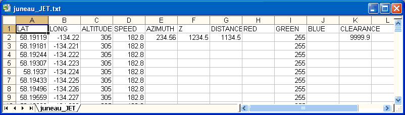
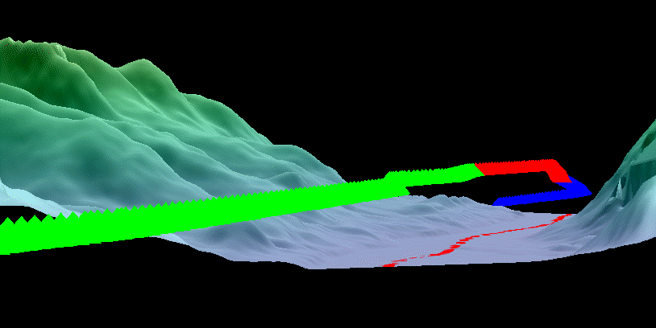
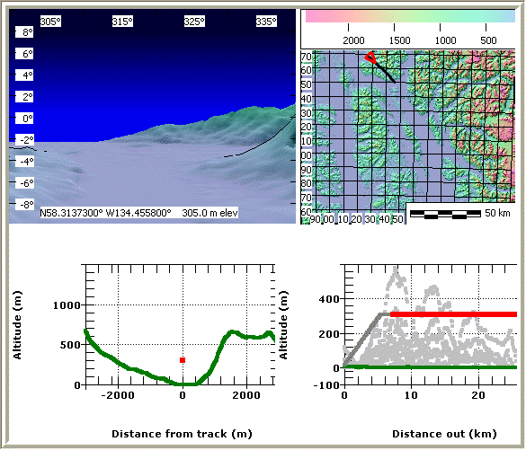
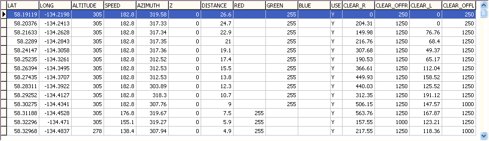

Flight Path Operations
 |
Create DBF file with flight path.
|
 |
Display flight path on map and 3D views. |
 |
Movie and clearance computation. |
 |
Final flight path database |
Last revision 12/7/2007